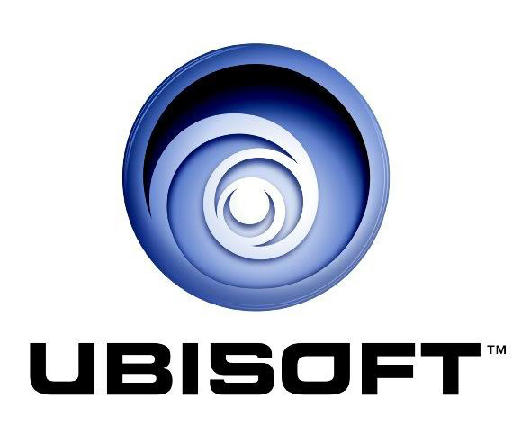

Assassin'S Creed
Za razliku od GTA, za AC serijal sam saznao mnogo kasnije. Prva igra koju sam igrao jeste Assassin'S Creed IV: Black Flag
Igre
Ovaj serijal ima jako puno igara, ispod će biti nabrojane samo igre iz glavnog serijala:
- Assassin'S Creed
- Assassin'S Creed II
- Assassin'S Creed: Brotherhood
- Assassin'S Creed: Revelations
- Assassin'S Creed III
- Assassin'S Creed IV: Black Flag
- Assassin'S Creed Rogue
- Assassin'S Creed Unity
- Assassin'S Creed Syndicate
- Assassin'S Creed Origins
- Assassin'S Creed Odyssey
- Assassin'S Creed Valhalla
Ovde mozemo videti logo kompanije ubisoft.
